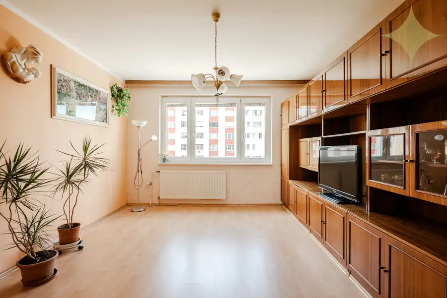
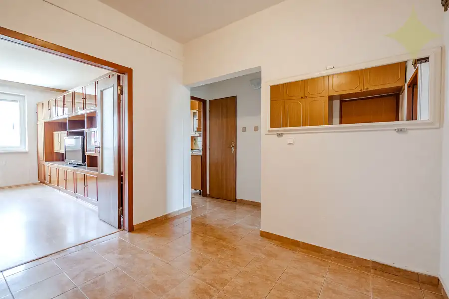
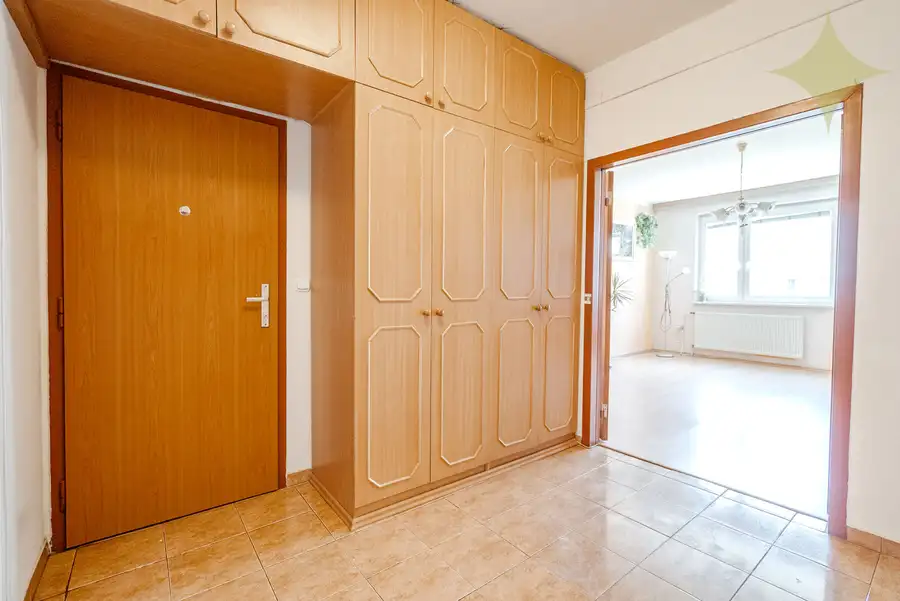
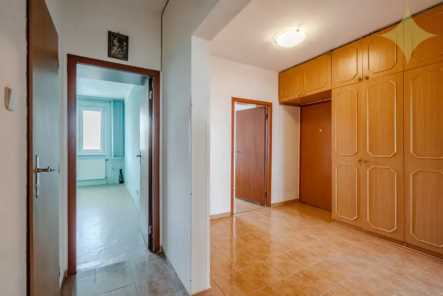
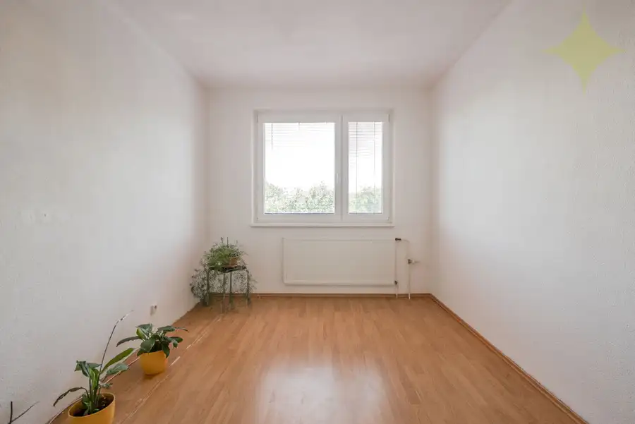
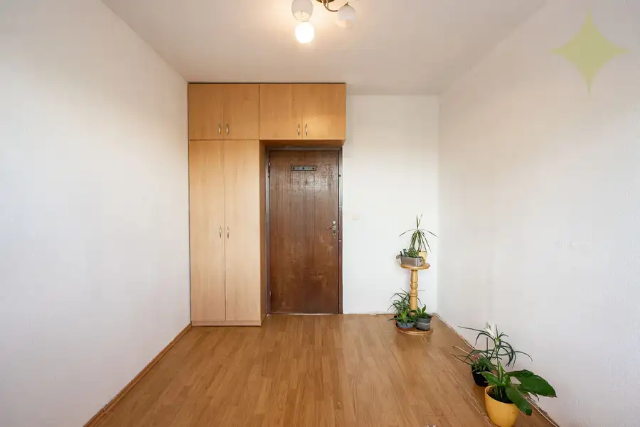
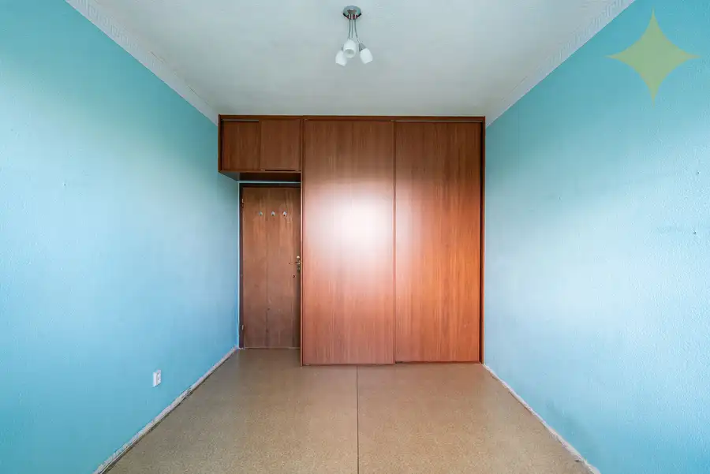
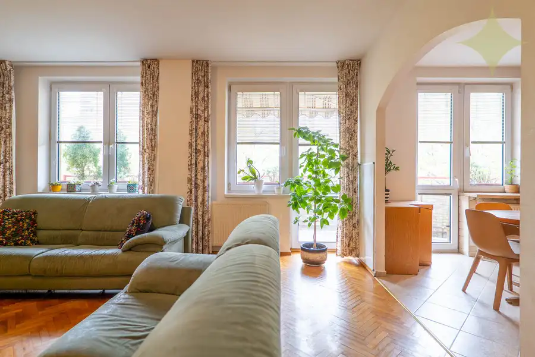

Predaj - 3-izb byt so zasklenou loggiou, 8 posch. dom, Lubovnianska ulica
Petržalka, Bratislava








- Dispozícia3-izbový
- Plocha70 m²
- Poschodie3. z 8
- StavČiastočná rekonštrukcia
- VlastníctvoOsobné
O nehnuteľnosti
Ponúkame na predaj 3-izbový byt 74m2 s lodžiou v 8 poschodovom zateplenom bytovom dome, nachádzajúci sa na 3/8 poschodí, orientáciu V/Z, na Lubovnianskej ulici. Byt je po staršej rekonštrukcii, v slušnom zachovalom stave. Bytový dom je zateplený, prerobená strecha, výťah, vchod na čip, nové stupačky.V byte sa nachádza vstupná hala, obývačka, 2x spálňa, samostatná kuchyňa, kúpeľňa s vaňou a samostatné wc. Z kuchyne je plnohodnotne zasklená loggia.Charakteristika nehnuteľnosti:-Výborná dispozícia, veľmi slušný dom-8 pochodový dom, na každom poschodí 2 byty-2 rolldor skriňa v izbách, + skriňa v chodbe-V kuchyni zánovná kuchynská linka, ktorá ešte splní svoj účel-Plynová varná doska, umývačka, zabudovaná chladnička-Plastové okná-Nové stupačky-Zateplený, dom nová strecha a veľmi slušný vchod-Pivničná kobka-Dobrá občianska vybavenosť, tiché prostredie-Hneď pri dome detské ihrisko-Škola a škôlka-Kúsok električka, jazero Draždiak a výjazd na D4Bytový dom sa nachádza hneď pri škole a škôlke vo veľmi tichom prostredí kúsok od detského ihriska cca 3-5 min obchody, MHD, električka, poliklinika do cca 10 min, jazero Draždiak, kúsok na hrádzu, rýchla dostupnosť do BA a na D4. Mesačné náklady 170€/1 osoba + elektrikaPredajná cena 242.000€ vrátane právne a hypotekárneho servisu.Kontakt: 0905264668branislav.holos123@gmail.comTáto inzercia nie je verejnou ponukou na uzavretie zmluvy. Vlastník si vyhradzuje právo rozhodnúť, komu a za akých podmienok prevedie svoje vlastnícke právo. Pri tejto ponuke je možné licitovať kúpnu cenu podľa všeobecných podmienok licitácie.
Parametre
- Cena vrátane energií
- Nie
- Druh
- 3 izbový byt
- Dátum zverejnenia
- 17. 07. 2026
- Energetický certifikát budovy
- nie je
- Orientácia
- Západná
- Podlažie
- 3
- Počet nadzemných podlaží
- 8
- Rok výstavby
- 1983
- Stav nehnuteľnosti
- Čiastočná rekonštrukcia
- Typ
- Predaj
- Typ konštrukcie
- Panelová
- Umiestnenie
- Vstavba podkrovia
- Vlastníctvo
- Osobné
- Úžitková plocha
- 70 m²
Kde to je


Mohlo by Vás zaujímať
 DomNové
430 000 €Predaj 4-izb RD ÚP 147m2 pozemok od 415m2, s tepelným čerpadlom v Rovinke
Rovinka
147 m²
DomNové
430 000 €Predaj 4-izb RD ÚP 147m2 pozemok od 415m2, s tepelným čerpadlom v Rovinke
Rovinka
147 m²
 DomNové
450 000 €Predaj 4-izb RD ÚP 157m2 pozemok od 443m2, s tepelným čerpadlom v Rovinke
Rovinka
157 m²
DomNové
450 000 €Predaj 4-izb RD ÚP 157m2 pozemok od 443m2, s tepelným čerpadlom v Rovinke
Rovinka
157 m²

BytNové 465 000 €TOP priestranný 3-izb. mezonet /možnosť úpravy na 4-izb./ 113 m², 2x balkón, garáž, Bajzova ulica Ružinov, Bratislava 3-izbový113 m²3. podlažie